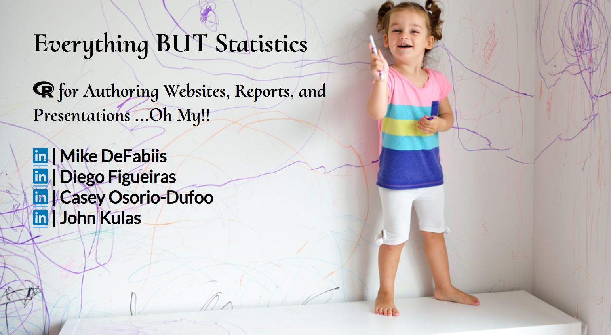
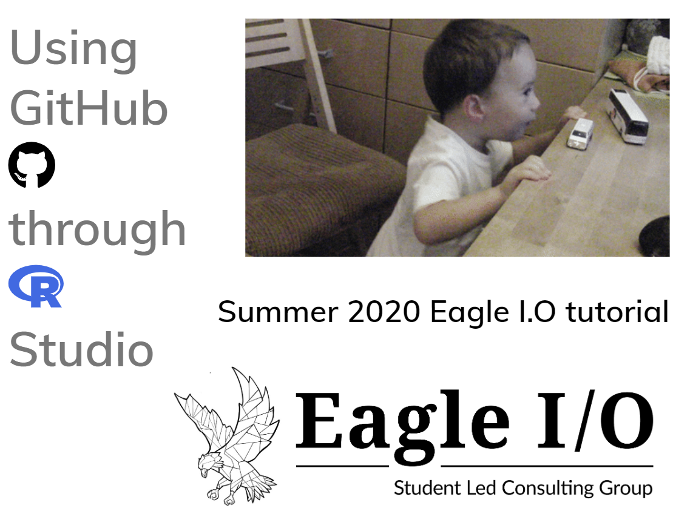
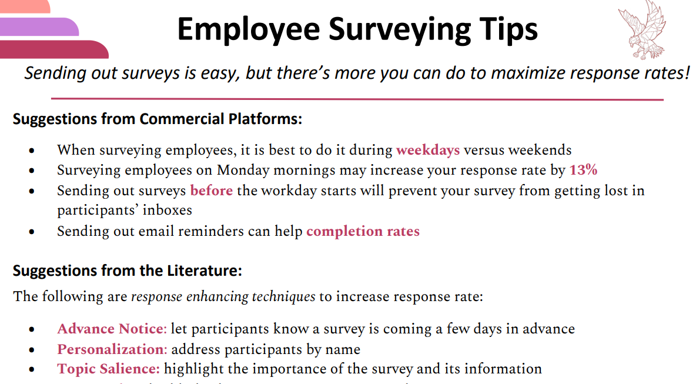
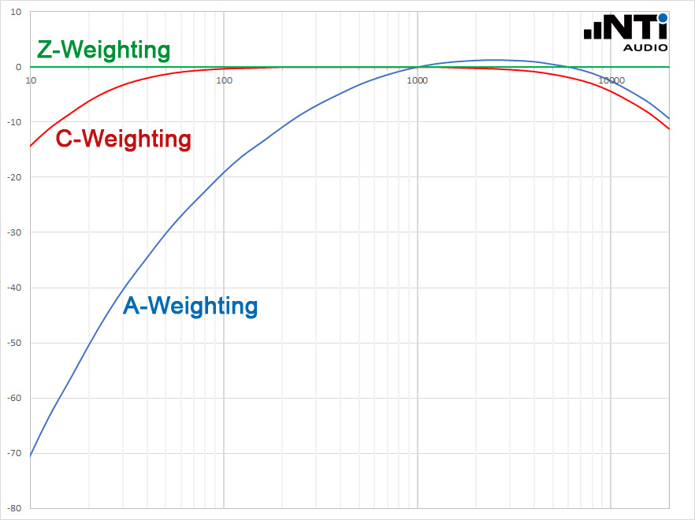
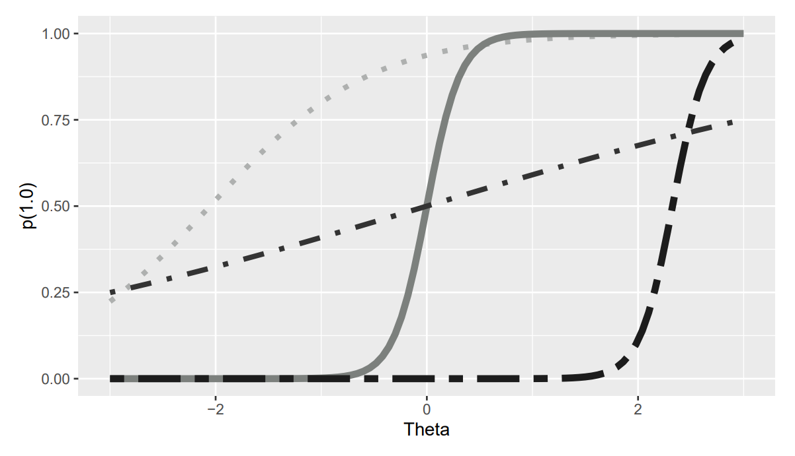
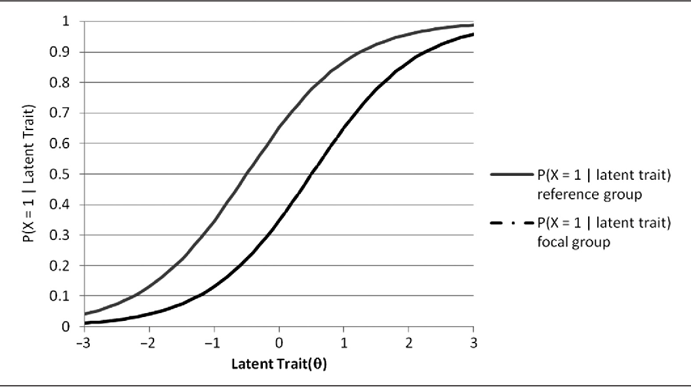

Professional resources 📚:
We maintain libraries of resources that have been created over the years either by eg personnel or graduate students in Industrial and Organizational Psychology that have had an association with Dr. Kulas. These resources all share a goal of furthering the advancement of testing and assessment within the framework of .
Teaching
If you are interested in training your personnel on so that you may develop your own -powered business processes and products, we also provide training on “how to use” - just drop us a note.
A partial listing of these resources (as well as hyperlinks to the resources themselves) is presented below:

| Authoring Resources: | ||
|  | Quarto tutorial (DeFabiis et al., 2023) | |
| Weekly LiveStreams (Forensic Psychometrics, 2024) | ||
| R Resources: | ||
| Working with RMarkdown (García Prieto Palacios Roji & Kulas, 2020) | ||
|  | Working with GitHub (García Prieto Palacios Roji et al., 2020) | |
| Surveying Resources: | ||
|  | How to administer surveys (García Prieto Palacios Roji et al., 2021) | |
|  | Survey weighting widget (Kulas et al., 2018) | |
| Testing Resources: | ||
|  | R package (Figueiras & Kulas, 2023) | |
|  | Multigroup DIF assessment widget (Kulas et al., 2011) |
DeFabiis, M., Figueiras, D., Osorio-Dufoo, C., & Kulas, J. T. (2023). R for authoring websites, reports, and presentations... Oh my!! [Online resource]. Minneapolis, MN: eRg. https://jtkulas.github.io/MPPAW2023
Figueiras, D., & Kulas, J. (2023). Ctticc: Item characteristic curves from classical test theory statistics. https://github.com/MontclairML/ctticc
García Prieto Palacios Roji, R., & Kulas, J. T. (2020). rMarkdown tutorial [Online resource]. Montclair, NJ: Eagle I.O. https://jtkulas.github.io/temp
García Prieto Palacios Roji, R., Osorio-Duffoo, C., D’Souza, N., & Kulas, J. T. (2020). Using GitHub through RStudio [Online resource]. Montclair, NJ: Eagle I.O. https://jtkulas.github.io/GitHub
García Prieto Palacios Roji, R., Wiedmann, P., Cruz, A., & D’Souza, N. (2021). Employee surveying tips [Online resource]. Montclair, NJ: Eagle I.O. https://eagle-io.weebly.com/survey-tips-one-pager.html
Kulas, J. T., Robinson, D. H., Smith, J. A., & Kellar, D. Z. (2018). Post-stratification weighting in organizational surveys: A cross-disciplinary tutorial. Human Resource Management, 57(2), 419–436.
Kulas, J. T., Thompson, R. C., & Anderson, M. G. (2011). California psychological inventory dominance scale measurement equivalence: General population normative and indian, UK, and US managerial samples. Educational and Psychological Measurement, 71(1), 245–257.